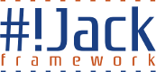

jQuery + Underscore.js Based Javascript MVC Toolkit or: How I learned to stop worrying and love the Javascript
© 2011 Jack Project by fkalab.org
Jack Framework is released under the GNU General Public license (GNU/GPL) Version 3. It means; you may distribute it and charge for that service. You may change it, add design and content to it and you may charge for that. You may not alter the license and you must not alter the copyright. You do not have to show a 'Powered by Jack Framework' graphic, as it not a copyright notice. You can reach the license details visiting http://www.gnu.org/licenses/gpl.txt